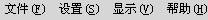

|
系统工具菜单有4个菜单项，即“文件（F）、设置（S）、显示（V）”和“帮助（H）”菜单项。每个菜单项都是一个下拉式菜单。如图所示： 。要激活某个下拉式菜单，可以用鼠标左键或ALT键和下拉菜单名称后面的字母。例如，用ALT+F可打开文件下拉式菜单，选择下拉菜单中的选项时，用户可以用几种方法来完成。
- 单击鼠标左键。
- 使用箭头方向键，移动至加亮的菜单项，用ENTER键运行菜单命令。
- 采用快捷键。一旦某个菜单被激活后，就可以使用其下级菜单对应的快捷键。例如，在文件菜单下，可以用字母键N来新建一个工程。
|